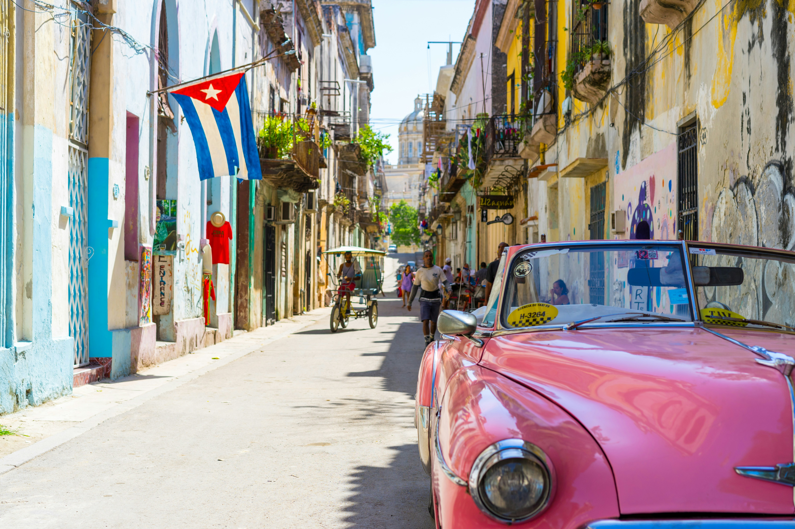
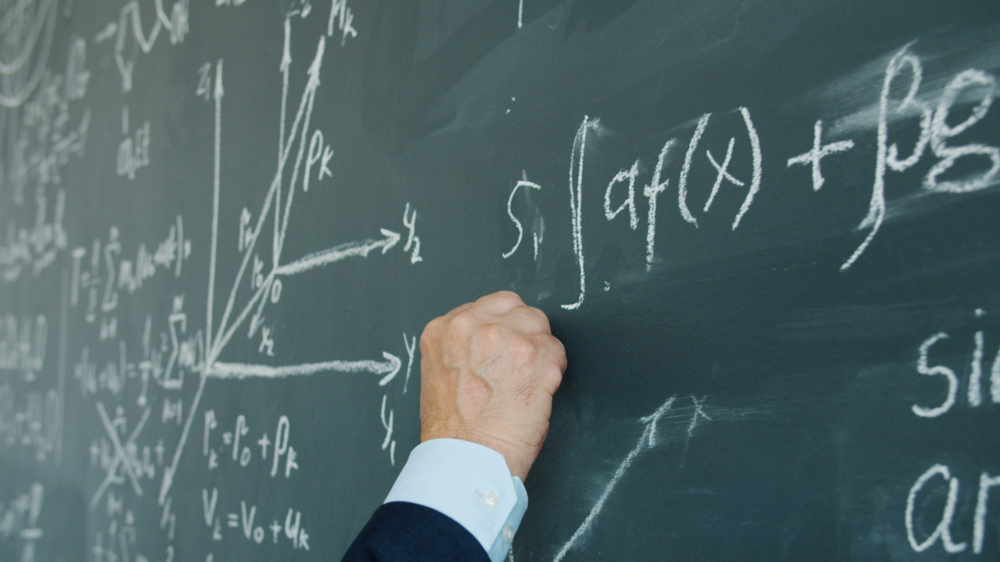

My Roots: Cuba & Havana
I grew up in Havana, shaped by a Cuban educational system that instilled in me a deep love for mathematics and science from a very young age. The Instituto Lenin de Ciencias Exactas — one of the most prestigious exact sciences high schools in Cuba — gave me the rigorous foundation that still defines how I think. No matter how far I travel, Havana remains part of who I am: its culture, its warmth, and its extraordinary respect for intellectual life.

Languages & Cultures
Living between Spanish, French, English, and a little Italian — four languages, four ways of thinking, four windows onto the world — has enriched my perspective in ways I could not have anticipated. I am fascinated by the way languages shape thought, and by the surprising connections between learning a language and learning mathematics: both require patience, pattern recognition, and the courage to make mistakes. My journey from Havana to Paris to Toulouse has made me a permanent student of cultures.

Cooking: Algorithms & Creativity
A recipe is, at its core, an algorithm — a precise sequence of steps, quantities, and transformations that reliably produces a result. But the best cooking, like the best mathematics, is never purely mechanical. The algorithm gives you the foundation; intuition and creativity give you the dish. Knowing why an emulsion holds, or why resting dough changes its structure, is the difference between following a formula and truly understanding it — and that distinction is one I find deeply familiar. In the kitchen, as in research, the real joy begins where the instructions end.

The Beauty of Mathematics
There is something that happens to the way you see the world once mathematics has truly changed your mind. Abstraction, which at first seems like a retreat from reality, turns out to be the opposite — a way of getting closer to the essence of things, stripped of noise and accident. Patterns that once seemed unrelated suddenly rhyme. Chaos reveals hidden order. A simple equation holds more meaning than a paragraph of words. Living with this perspective is a quiet privilege: you learn to find structure where others see confusion, and beauty where others see only complexity. Mathematics did not just give me tools — it gave me a way of inhabiting the world with more wonder.